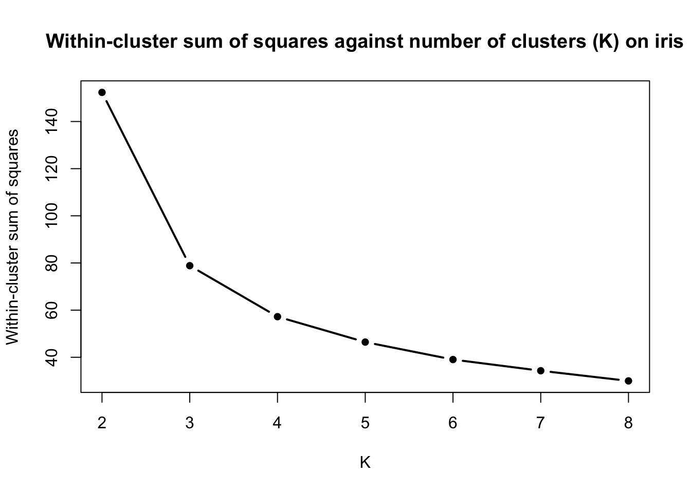
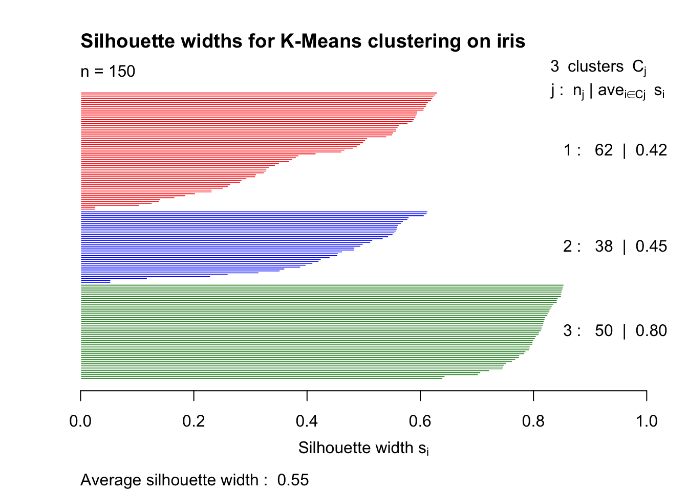
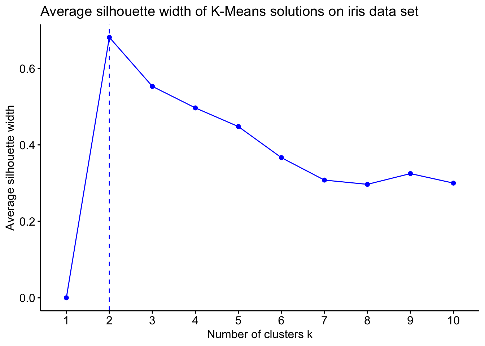

One of the most challenging problems in cluster analysis is estimating the number of clusters \(K\). Several ideas have been proposed in the literature; we present some of the most commonly used ones here.
The Elbow Method
Let us take the iris data set and perform K-means clustering with \(K = 2, 3, \ldots, 8\) and record the within-cluster sum of squares for each clustering solution.
data(iris)# Remove species variablesiris <- iris[, -5]# Initialise a vector to store the within-cluster sums of squareswcss <-c()# Run K-Means with K = 2, 3, ..., 8for (K inc(2:8)){ kmeans_res <-kmeans(x = iris,centers = K,iter.max =100,nstart =100)# Store within-cluster sum of squares wcss <-c(wcss, kmeans_res$tot.withinss)}# Plot of the within-cluster sum of squares values against Kplot(x =c(2:8), y = wcss,type ='b', lwd =2,pch =16,xlab ='K',ylab ='Within-cluster sum of squares',main ='Within-cluster sum of squares against number of clusters (K) on iris')

We observe a decreasing trend of the within-cluster sum of squares as \(K\) increases. The elbow heuristic suggests selecting the value of \(K\) corresponding to the “elbow” of the curve. The elbow of a curve is, roughly speaking, the point where the curve visibly bends from high to low slope to low slope. On the iris data set, the elbow point corresponds to \(K=3\), suggesting that 3 clusters are most appropriate.
💡 Fun fact
If a curve is increasing, the analogous to an elbow point is called the knee of the curve.
❓ Why does this work?
The within-cluster sum of squares always decreases as \(K\) increases. Can you explain why? Why is the elbow point of interest here? (Hint: Think of what it means for the WCSS to drop sharply when going from\(K\) to \(K+1\) clusters and then decreasing very slowly).
Intrinsic Evaluation Metrics
The elbow method is commonly criticised in the literature for several reasons, such as:
High ambiguity; what if there is no clearly visible elbow?
Subjectivity; it is up to the user to decide where the elbow is.
Manual inspection; the process requires user intervention, i.e. it is not automated.
The need for a quantitative and more theoretically-grounded approach to selecting the number of clusters has led to the formulation of several intrinsic evaluation metrics which determine the quality of a partition by assessing some criteria. We present some of these in the Table below:
Metric
Range
Higher is Better?
Silhouette Coefficient
\([-1, 1]\)
✅ Yes
Gap Statistic
\((-\infty, \infty)\)
✅ Yes
Calinski-Harabasz Index
\([0, \infty)\)
✅ Yes
Davies-Bouldin Index
\([0, \infty)\)
❌ No
Dunn Index
\([0, \infty)\)
✅ Yes
There exist many more intrinsic evaluation measures; a detailed description can be found in Charrad et al. (2014) and these are implemented in the NbClust package in R. We describe two of these metrics below.
Silhouette Coefficient
The elbow method takes into consideration the within-cluster sum of squares. Therefore, it only accounts for compactness of the clusters. However, this tells us nothing about how well-separated the clusters are. The silhouette coefficient circumvents this shortcoming of the elbow and produces values in the range \([-1, 1]\) that tell us how similar an observations is to its own cluster compared to other clusters. Assuming we run a clustering algorithm assuming \(K\) clusters and \(i \in C_k\), that is, \(\mathbf{x}_{i}\) is assigned to cluster \(1 \leq k \leq K\), the silhouette of observation \(i\) is given by:
with \(d\) being the dissimilarity function used for clustering and denoting the cluster that observation \(\mathbf{x}_{i'}\) is assigned to by \(C_{k'}\).
❓ What do\(a(i)\) and \(b(i)\) represent?
Can you explain \(a(i)\) and \(b(i)\) in simple words?
We can compute the silhouette for all \(n\) observations; the final decision is then based on the average of these silhouette values, also known as the average silhouette width.
The cluster package allows us to visualise all silhouette values of a data set. For instance, for the iris data set and K-Means with \(K = 3\):
library(cluster)# Run k-Means on iris with K = 3kmeans_res <-kmeans(x = iris,centers =3,iter.max =100,nstart =100)# Compute silhouette widths# Note that x must be the cluster allocation and dist is the dissimilarity matrixsilhouette_vals <-silhouette(x = kmeans_res$cluster,dist =dist(iris))# Plot the silhouette valuesplot(silhouette_vals,col =c('red', 'blue', 'forestgreen'),main ='Silhouette widths for K-Means clustering on iris')

If you want to compute the average silhouette value for several values of \(K\) and then decide the number of clusters based on the value of \(K\) that maximises the average silhouette, the fviz_nbclust function from the factoextra package does exactly that and also visualises the results!
library(factoextra)# Use the fviz_nbclust function to compute and visualise avg. silhouette widthsfviz_nbclust(x = iris,FUNcluster = kmeans,method ="silhouette",k.max =10,linecolor ='blue') +ggtitle("Average silhouette width of K-Means solutions on iris data set")

Interestingly, this suggests that the optimal number of clusters in iris is \(K=2\) and not \(K=3\) that we previously got using the elbow method!
It is generally recommended to use several intrinsic evaluation measures to decide the number of clusters. The silhouette may hint the presence of two clusters but other metrics may all agree on \(K=3\) for instance.
Gap Statistic
The Gap statistic is a more statistically principled way of estimating the number of clusters. It is based on the idea that if a cluster structure exists in a data set, the clusters will be significantly more compact than what you would expect from randomly distributed data.
The following steps are used for computing the Gap statistic:
Compute WCSS for data set:
Perform clustering on the data set assuming \(K\) clusters.
Compute the within-cluster sum of squares \(W_k\).
Generate reference data sets:
Create \(B\) uniformly random data sets with the same dimensions as your data.
For each feature, sample values uniformly between the observed minimum and maximum values.
These reference data sets have no inherent cluster structure.
Compute WCSS for each reference dataset:
For each of the \(B\) random data sets \(b = 1, \dots, B\):
Perform clustering assuming \(K\) clusters.
Compute reference WCSS \(W_{kb}^*\).
Calculate the Gap Statistic:\[
\text{Gap}(K) = \frac{1}{B} \sum_{b=1}^{B} \log(W_{kb}^*) - \log(W_k)
\] Where:
\(\log(W_k)\) = log of actual WCSS,
\(\log(W_{kb}^*)\) = log of reference WCSS for data set \(b\).
The above steps are repeated for several \(K\) values. The number of clusters is selected to be either the value of \(K\) for which \(\text{Gap}(K)\) is maximised, or the minimum \(K\) value for which \(\text{Gap}(K) \geq \text{Gap}(K+1) − \text{sd}(K+1)\).
Good news is you do not need to compute the Gap statistic manually (although this would be a fun coding exercise). The clusGap function from the cluster package provides a computation of the Gap statistic for a range of \(K\) values. We use this to compute the Gap statistic for \(K = 1, \ldots, 10\) on the iris data set with \(B=100\) (i.e. 100 reference data sets for each value of \(K\)). We can then visualise the results using the fviz_gap_stat function from factoextra package. The fviz_gap_stat function also allows for determining the rule for selecting the number of clusters (e.g. maximum Gap value, or the one standard error rule).
library(patchwork)# Compute Gap statistic valuesiris_gap <-clusGap(x = iris,FUNcluster = kmeans,nstart =100,K.max =10,B =100,verbose =FALSE)# Use the fviz_gap_stat function to visualise Gap statistic values# Select the number of clusters using the maximum Gapp1 <-fviz_gap_stat(gap_stat = iris_gap,linecolor ='red',maxSE =list(method ="globalmax")) +labs(title ="Gap statistic values for K-Means solutions on iris data set",subtitle ="(Maximum Gap)")# Select the number of clusters using the one SE rulep2 <-fviz_gap_stat(gap_stat = iris_gap,linecolor ='red',maxSE =list(method ="Tibs2001SEmax")) +labs(title ="Gap statistic values for K-Means solutions on iris data set",subtitle ="(One SE rule)")p1 / p2
We see that the two rules give two completely different numbers of clusters. At the end, it is up to us to select the number of clusters and this may be based on the context, domain knowledge, or simply what the different solutions in varying numbers of clusters mean!
Extrinsic Evaluation Metrics
Suppose we have run clustering on a data set using two different clustering algorithms and we want to check how similar these solutions are. Or perhaps we have cluster labels and wish to assess how much our obtained partition agrees with the labels. In this case, we need to use extrinsic evaluation metrics to quantify this agreement! We provide a list of some extrinsic evaluation metrics below (you do not need to know or use all of them; usually just 2-3 are enough):
Metric
Range
Higher is Better?
Rand Index (RI)
\([0, 1]\)
✅ Yes
Adjusted Rand Index (ARI)
\([-1, 1]\)
✅ Yes
Fowlkes-Mallows Index (FMI)
\([0, 1]\)
✅ Yes
Jaccard Index
\([0, 1]\)
✅ Yes
Mutual Information (MI)
\([0, \infty)\)
✅ Yes
Adjusted Mutual Information (AMI)
\([-1, 1]\)
✅ Yes
Normalised Mutual Information (NMI)
\([0, 1]\)
✅ Yes
Homogeneity
\([0, 1]\)
✅ Yes
Completeness
\([0, 1]\)
✅ Yes
V-measure
\([0, 1]\)
✅ Yes
Purity
\([0, 1]\)
✅ Yes
💡 Fun fact
Extrinsic evaluation metrics can also compare two partitions with different numbers of clusters!
(Adjusted) Rand Index
The Rand Index (RI) is one of the most commonly used extrinsic evaluation metrics in clustering. In order to define the RI, we assume that we have access to two partitions \(\mathcal{C}_1\) and \(\mathcal{C}_2\) of the same \(n\) objects into \(K_1\) and \(K_2\) clusters, respectively (note that it is possible that\(K_1 \neq K_2\)). We introduce the following notation:
\(a\): Number of object pairs which are in the same cluster in \(\mathcal{C}_1\) and in the same cluster in \(\mathcal{C}_2\).
\(b\): Number of object pairs which are in distinct clusters in \(\mathcal{C}_1\) and in distinct clusters in \(\mathcal{C}_2\).
\(c\): Number of object pairs which are in the same cluster in \(\mathcal{C}_1\) and in distinct clusters in \(\mathcal{C}_2\).
\(d\): Number of object pairs which are in distinct clusters in \(\mathcal{C}_1\) and in the same cluster in \(\mathcal{C}_2\).
The RI between \(\mathcal{C}_1\) and \(\mathcal{C}_2\) is then defined as: \[
\text{RI}(\mathcal{C}_1, \mathcal{C}_2) = \frac{a + b}{a + b + c + d} = \frac{a + b}{\binom{n}{2}}.
\]
❓ Why does the denominator in the RI definition simplify?
Can you explain why the denominator \(a + b + c + d\) in the above definition of the RI simplifies to \(\binom{n}{2}\)?
Note🤔 Quiz: Let \(n = 5\) and suppose we have two partitions \(\mathcal{C}_1 = \{ \{1, 2, 3\}, \{4, 5 \} \}\) and \(\mathcal{C}_2 = \{ \{4, 1, 5\}, \{2, 3 \} \}\). What is the value of \(\text{RI}(\mathcal{C}_1, \mathcal{C}_2)\)?
A. \(0.3\)
B. \(0.4\)
C. \(0.5\)
D. \(0.6\)
Show Answer
🎲 The RI is currently being audited…
Did these partitions agree more than two random clusterings would? Our statisticians are still debating whether this similarity is significant or just randomly significant!
The Adjusted Rand Index (ARI) is the adjusted-for-chance version of the RI. It takes into account the expected similarity among all pairwise comparisons between two clusterings specified by a random model and corrects the RI accordingly. Suppose we have the following cross-tabulation of two partitions \(\mathcal{C}_1\) and \(\mathcal{C}'\):
\(C'_1\)
\(\ldots\)
\(C'_{K'}\)
Sum
\(C_1\)
\(n_{1,1}\)
\(\ldots\)
\(n_{1,K'}\)
\(a_1\)
\(\vdots\)
\(\vdots\)
\(\ddots\)
\(\vdots\)
\(\vdots\)
\(C_{K}\)
\(n_{K,1}\)
\(\ldots\)
\(n_{K, K'}\)
\(a_{K}\)
Sum
\(b_1\)
\(\ldots\)
\(b_{K'}\)
\(n\)
where \(C_k\) and \(C'_k\) denote the \(k\)th cluster in \(\mathcal{C}\) and \(\mathcal{C}'\), respectively, while \(K\) and \(K'\) are the number of clusters that the two partitions assume. A hypergeometric model is used as a baseline random model, according to which: \[
n_{i,j} \sim \text{Hypergeometric}(n, a_i, b_j),
\]
with \(n_{i, j}\) representing the number of objects assigned in clusters \(C_i\) and \(C'_{j}\).
❓ How can you explain this?
Can you give an interpretation of the use of the hypergeometric distribution for the random model?
Therefore, the ARI between \(\mathcal{C}\) and \(\mathcal{C}'\) is given by:
The Expression for the ARI may look a bit complicated but there is no need to compute it manually! The aricode package in R includes relevant functions for computing the RI, the ARI, as well as some other extrinsic evaluation metrics. The example below is an illustration of how to use these functions on the iris data set, assuming we have run K-Means with \(K=3\) and we wish to compare our clusters to the actual labels (i.e. the Species feature that we previously removed).
library(aricode)# Reload the data to get access to the Species featuredata(iris)species <- iris$Species# Now remove the labels to run clustering on the rest of the featuresiris <- iris[, -5]kmeans_res <-kmeans(x = iris,centers =3,iter.max =100,nstart =100)# Compute the RI and the ARIri_iris <-RI(kmeans_res$cluster, species)ari_iris <-ARI(kmeans_res$cluster, species)cat('Rand Index:', ri_iris, '\n')
Rand Index: 0.8797315
cat('Adjusted Rand Index:', ari_iris, '\n')
Adjusted Rand Index: 0.7302383
❓ Negative ARI values
The RI is restricted to give a value in the unit interval \([0, 1]\). In contrast, the ARI produces values in \([-1, 1]\) instead. How would you interpret a negative value of the ARI?
Note that it is always a good idea to report several evaluation metrics. The aricode package provides implementations for some of these, such as the AMI and the NMI. Unfortunately, there is no R package that includes all of the extrinsic evaluation metrics mentioned here; you are more than welcome to use functions from other packages that calculate these extrinsic evaluation metrics.
Visualisations
Clustering is an unsupervised learning problem, therefore there is no “ground truth” that is readily available. When it comes to evaluating our clustering output, it is usually best to refer to a qualitative assessment of the resulting partition.
There are several ways one can visualise the resulting output. These allow for a qualitative assessment of our clusters. We will make use of two such plots, namely pair plots and parallel coordinate plots. A pair plot is simply a matrix of pairwise scatter plots of the observations; that is, a visualisation of observations on all pairs of variables. Pair plots can get extremely large when the number of features included in the data is very large. Below, we provide an example of a pair plot on the iris data; we use the obtained partition into 3 clusters as our solution.
# Take the full iris data set and add a column for the clustering solutiondata(iris)iris$Cluster <-as.factor(kmeans_res$cluster)# Plot variables where colour = obtained cluster label + point shape = Speciespairs(iris[, c(1:4)],col = iris$Cluster,pch =as.integer(iris$Species))
The GGally package provides some nice pair plot visualisations including additional information using the ggpairs function. This also produces a legend that can be used for reference.
The ggpairs function returns more than just the pair plots! It also reports the overall correlation between variables and correlations between variables for observations in each cluster (can you explain what the asterisks mean?), as well as density estimates of the features (on the diagonal) for each cluster.
For instance, looking at these plots shows that the versicolor and virginica species are overlapping and this has confused K-Means. This is perhaps why the Silhouette was suggesting two clusters.
❓ Solution suggested by silhouette
The Silhouette method suggested a solution into 2 clusters. Try running K-Means with \(K=2\) on the iris data set and create a pairs plot. What do you see? Can you justify why the silhouette was suggesting 2 clusters instead of 3?
A second type of plots that is usually of interest is the parallel coordinates plot. This is simply a plot where a statistic of interest is visualised for each variable, with different lines representing different clusters. The function below can be used for generating a parallel coordinates plot and we use it on our K-Means solution on iris.
library(ggplot2)parallel_coords_plot <-function(data, labels, stat_fun = mean, rotate_labels =45, line_size =1.2,point_size =3) { data <-as.data.frame(data) clusters <-unique(labels) n_clusters <-length(clusters) n_features <-ncol(data) feature_names <-colnames(data) stat_matrix <-matrix(NA, nrow = n_clusters, ncol = n_features)for(i inseq_along(clusters)) { cluster_data <- data[labels == clusters[i], , drop =FALSE]for(j in1:n_features) { stat_matrix[i, j] <-stat_fun(cluster_data[, j]) } } plot_data <-data.frame(Feature =rep(feature_names, each = n_clusters),Value =as.vector(t(stat_matrix)),Cluster =rep(as.character(clusters), times = n_features),Feature_num =rep(1:n_features, each = n_clusters) ) p <-ggplot(plot_data, aes(x = Feature_num, y = Value, group = Cluster, color = Cluster)) +geom_line(linewidth = line_size) +geom_point(size = point_size) +scale_x_continuous(breaks =1:n_features, labels = feature_names) +theme_bw() +labs(x ="Features", y =paste0("Statistic (", deparse(substitute(stat_fun)), ")"),color ="Cluster") +theme(axis.text.x =element_text(angle = rotate_labels, hjust =if(rotate_labels >0) 1else0.5, size =10),legend.position ="right",panel.grid.major.x =element_line(color ="grey80"),panel.grid.minor =element_blank() )return(p)}# Example usage with the K-Means labelsparallel_coords_plot(data = iris[, c(1:4)],labels = kmeans_res$cluster,stat_fun = mean,rotate_labels =45) +labs(title ='Parallel coordinates plot of K-Means solution on iris data')
Thus, we can see that one of the clusters stands out as it includes flowers with large average petal length, whereas some other cluster contains flowers with very small sepal widths. We can also use a parallel coordinates plot on the actual species labels to have a much more complete picture.
# Parallel coordinates plot using Species labelsparallel_coords_plot(data = iris[, c(1:4)],labels = iris$Species,stat_fun = mean,rotate_labels =45) +labs(title ='Parallel coordinates plot of iris Species')
🚀 Time to practice!
The USArrests data set includes statistics for assault, murder, and rape in each of the 50 US states from 1973. Load the USArrests data in R (just use data(USArrests) to load it to your working environment). Use a clustering algorithm of your choice and try to estimate the number of clusters using different intrinsic evaluation metrics. Then, use a second clustering algorithm, estimate the number of clusters and compare the partitions each algorithm has given you using several extrinsic evaluation metrics. Visualise both obtained partitions and try interpreting them. Which one makes more sense to you and why?
Key takeaways
Estimating the number of clusters is a challenging problem in clustering.
The Elbow method is a heuristic that can be used for estimating the number of clusters.
Intrinsic evaluation measures (such as the Silhouette, or the Gap statistic) provide a more principled approach to the problem.
Extrinsic evaluation metrics quantify the agreement between two partitions or between a partition and cluster labels (if those exist).
Interpreting the clustering output requires a qualitative assessment of the clusters; this is why visualisations using e.g. pair plots or parallel coordinate plots are very useful.
References
Charrad, M., Ghazzali, N., Boiteau, V., & Niknafs, A. (2014). NbClust: An R package for determining the relevant number of clusters in a data set. Journal of Statistical Software, 61, 1–36.